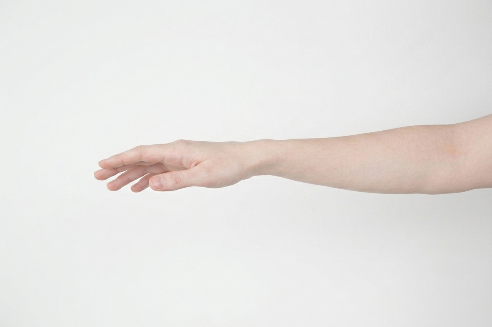
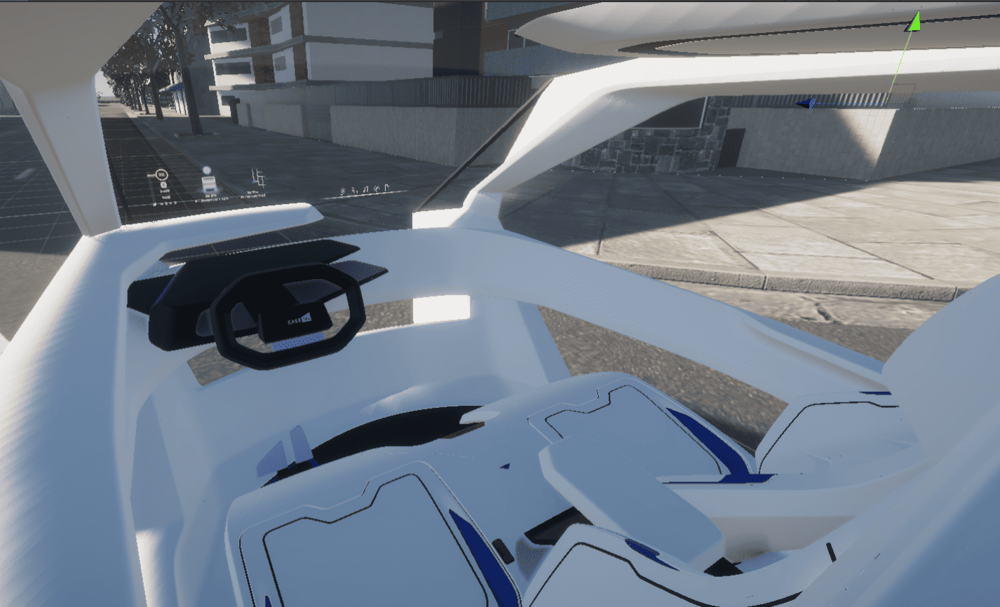
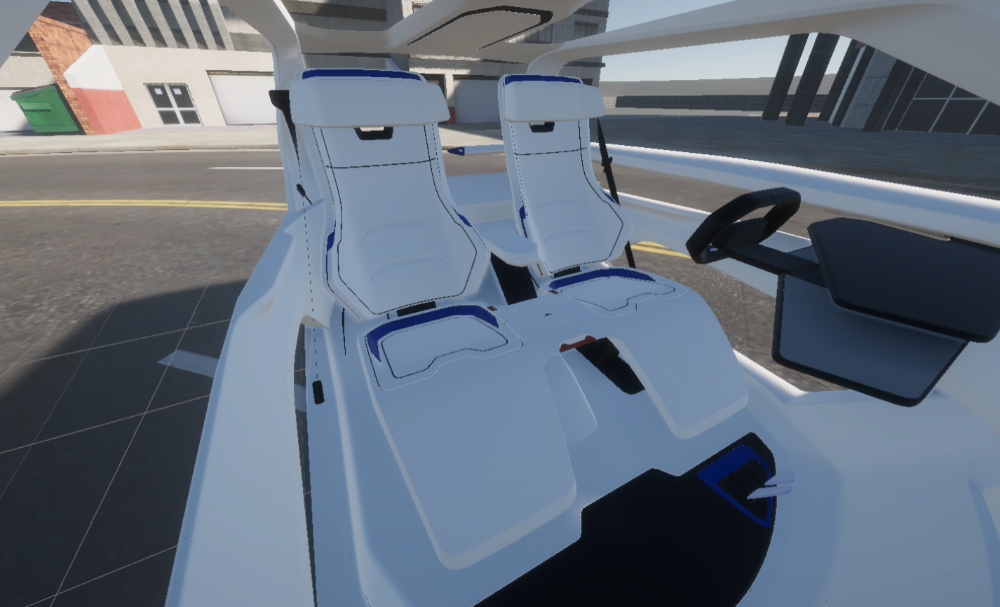
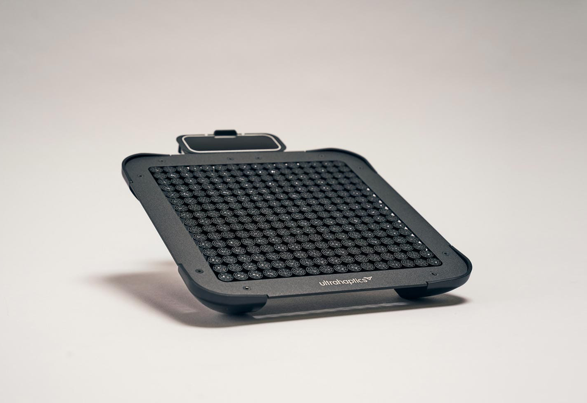
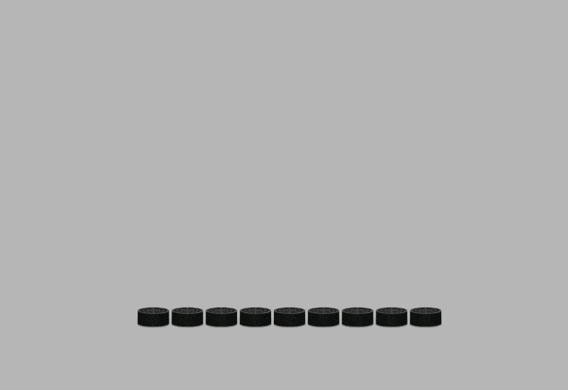
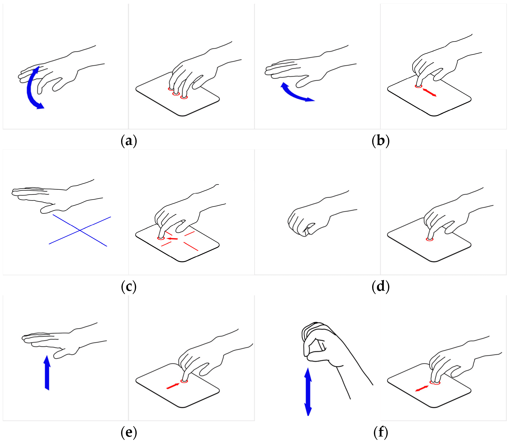
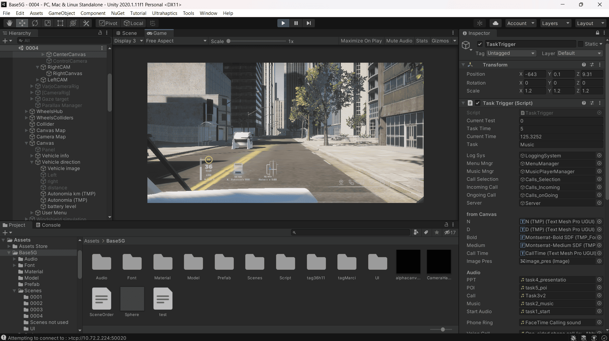
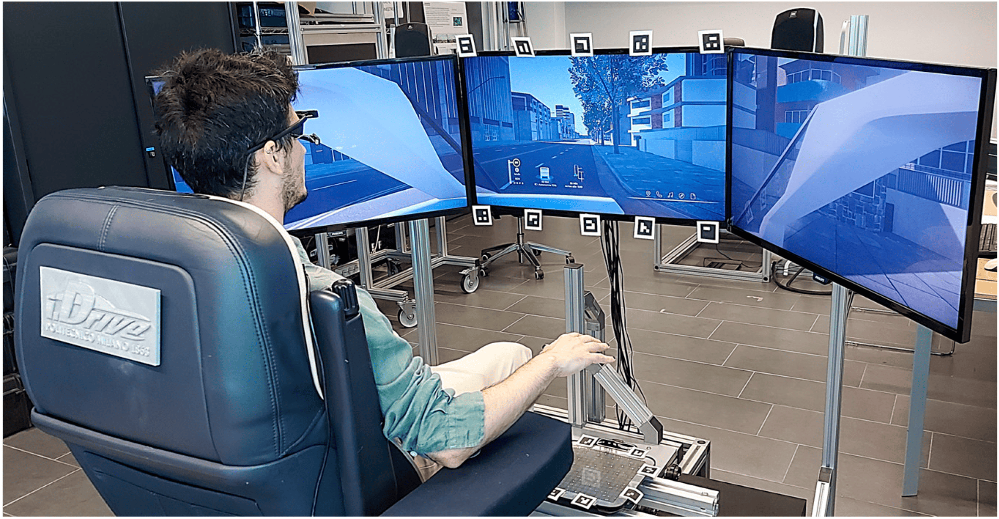
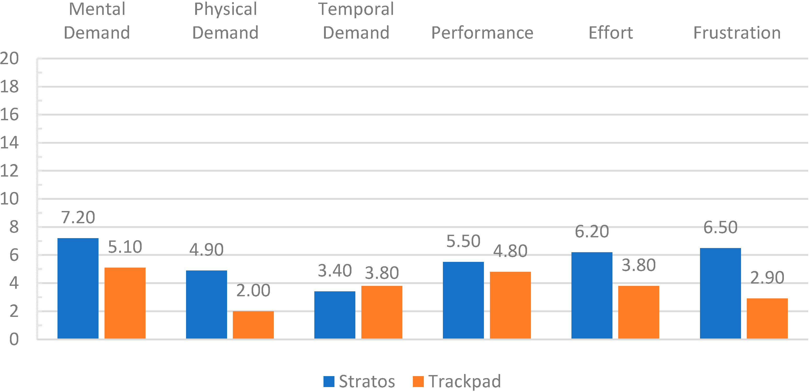
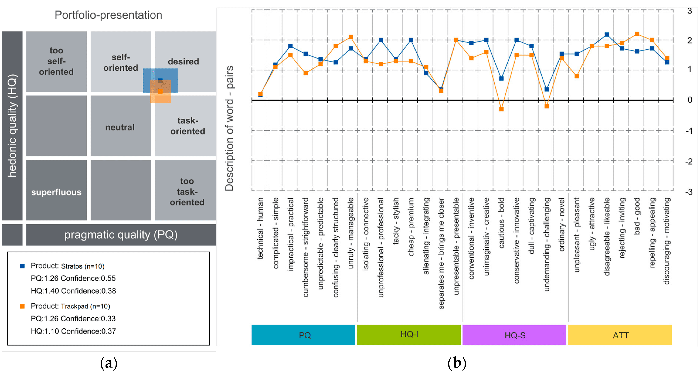

Automotive Gestures & Mid-Air Haptics

- Interaction Designer
- UX Researcher
- Advanced Prototyper
- Testing Lead
- Pierstefano Bellani
- Andrea Picardi
- Federica Caruso
- Flora Gaetani
The starting point came from another team, who had done the upstream research: a scenario for a shared, connected, autonomous vehicle, complete with system maps, user journeys, and an analysis of passenger needs. Our work began where the research left off, deciding how people would actually use the space. Here we worked closely with Akkodis on the interior, their automotive division leading the cabin and the 3D model while we shaped the HMI and the interactions inside it.


We saw an opportunity in head-up display technology and pushed it further, turning the whole windshield into the primary interface, an infotainment surface and a window onto the smart city at once. To keep that much information calm and readable, we organised the display into three areas: driving information on the left, navigation and the road situation in the middle, and a five-item menu on the right for navigation, calls, music, documents, and points of interest. Information about the surrounding buildings was layered in as the car moved, so the windshield doubled as a live window onto the city. The aim throughout was to let people focus on one thing at a time instead of facing a wall of data.
Then came the central question: how do you operate a screen you cannot reach? We deliberately set two interaction methods against each other. The first was mid-air hand gestures, letting passengers control the windshield without touching anything. Research told us early that mid-air gestures fail without clear, immediate feedback, so we paired them with Ultraleap Stratos, which produces tactile sensations in mid-air using focused ultrasound. The second was a trackpad mounted within easy reach, using the familiar swipe, tap, and scroll people already know.


The gesture set was defined together by the team, and I led the trackpad side of it. We worked out six core interactions and designed them alongside the interface rather than after it, so the two reinforced each other: the five-item menu existed to suit a finger gesture, and submenus were laid out as grids or scrolls to favour a swipe. Each interaction was then defined for both devices, so the same intent mapped to a mid-air gesture and to a trackpad equivalent, which kept the comparison fair.

Designing the interaction was only half the work. To evaluate it honestly, both methods had to be experienced in something close to the real thing, so we built a high-fidelity simulation on the Politecnico di Milano iDrive driving simulator.
We built it in the Unity game engine, placing a virtual autonomous vehicle in a moving urban scene that mirrored the study scenario, so participants felt like passengers in a car that was genuinely driving itself through a city. The simulator reproduced the windshield across three screens, and we rebuilt the interface inside Unity as a working GUI rather than a static image, wiring up the panels so they responded live. We integrated the Ultraleap Stratos device, mapped the gesture set to system actions, and tuned the haptic feedback so a gesture in mid-air produced a tactile sensation at the right moment. The trackpad ran through the same interface, so both modalities drove identical functionality and nothing but the input method changed between groups.
The point of all this was rigour. A functional build like this, rather than a clickable mock-up, is what made it possible to measure the real interaction instead of an approximation of it. The windshield reacted in real time to real gestures, and the haptics fired as they would in a shipped system, so the study tested the actual interaction rather than a rough stand-in for it.

With the simulation working, we designed the evaluation and ran it. It happened in two passes. During the design phase we ran formative pilot tests, small and informal, to catch problems early and feed fixes back into the gestures and the interface before they hardened. In those pilots we used a Wizard of Oz approach to stand in for the parts of the system not yet built in the simulation, and a guided think-aloud so problems surfaced as people worked through the interface. Once the system was stable, we ran a summative study to compare the two input methods properly.
The question behind it was direct: does an advanced mid-air interface actually differ from a familiar baseline in how well, and how comfortably, people can use it? We went in expecting a difference in efficiency and workload, with the null hypothesis being that the two would perform the same. The summative study used a between-subjects design: each participant used only one interface, either the Stratos mid-air haptics or the trackpad, never both. A within-subjects design, where the same person tries both, would have been more reliable, but running both interfaces in one sitting stretched the session to around two hours, which pilot participants found too long, so we split people into two groups instead. Twenty took part, ten per group, all aged between 20 and 29. Both groups worked through the same five tasks on the same windshield GUI, chosen to cover the everyday range of in-car interaction:
- Set the destination and confirm the trip.
- Select a song and adjust the volume.
- Take an incoming call and end it.
- Find, open, and skim a presentation in the file menu.
- Select a point of interest.
Each session opened with a moderated warm-up so participants understood the gestures before anything was measured, which kept the study from capturing first-contact confusion instead of the interface itself. The evaluation was deliberately mixed-methods, combining quantitative measures, standardised questionnaires, and qualitative interviews so the numbers and the reasons behind them could be read together. Each measure stood in for a construct we cared about: task success and errors for effectiveness, completion time for efficiency, and how often people glanced down at the input device, logged with a Pupil Core eye-tracker, as a proxy for visual distraction, the attention each method pulled from the road. For the subjective side we used two standardised instruments, the Raw NASA-TLX for perceived workload and AttrakDiff for the overall quality of the experience, and we closed each session with a short interview to surface the reasoning the numbers could not.

Pulling the strands together was where the picture formed, and the headline is that the two interfaces came out broadly comparable. With only twenty participants, we used Mann-Whitney U tests rather than assume a normal distribution, and none of the differences reached statistical significance, so we could not reject the null hypothesis that the two interfaces performed the same, and the numbers are best read as directional trends rather than proven effects.
Within that, two things stood out. The eye-tracking leaned in a consistent direction: people tended to glance at the Stratos interface less often than at the trackpad, which would mean less attention pulled from the road, though the difference was not significant and would need a larger sample to confirm. The more robust finding came from the other side of the data. The NASA-TLX, the behaviour observed during the test, and the post-test interviews all agreed that Stratos was more physically tiring, and the cause was concrete. In both variants the subject sat in the simulator seat with their arm on an armrest. With the trackpad, the pad sat level with the top of the armrest, so the hand could rest flush on it. With Stratos, the device sat around twenty centimetres below the hand, its optimal operating distance, so while the arm was supported, the hand had to stay floating above the device for every interaction. That sustained hover is what made the touchless interaction more tiring, and the agreement across three independent sources is the one trade-off we would stand behind from this study.

AttrakDiff filled in the experience side. Stratos was perceived as more innovative and more premium, but several participants were confused by specific gestures, mistook some menu icons, and wanted clearer feedback on whether the system had understood them.

Taken together, the qualitative signal pointed to clear, actionable direction: keep the touchless interaction for its low visual demand, but reduce its physical cost, sharpen the feedback for each gesture, simplify the harder gestures, and make the icons clearer.
A few limits frame all of this. The sample was small, so the comparison catches trends more than firm effects. The fatigue is partly an artefact of this prototype, since the required floating-hand position, rather than mid-air interaction as such, drove much of the physical cost, so a better ergonomic setup might soften it. And the trackpad, though familiar in daily life, was new inside a car for almost everyone, which likely narrowed the gap between the two.
The study produced a usable result: a clear, evidence-backed trade-off between the low visual demand of touchless input and its physical cost, plus a concrete set of fixes. That closed the loop the project ran, from a concept, to a working prototype, to evidence solid enough to act on.